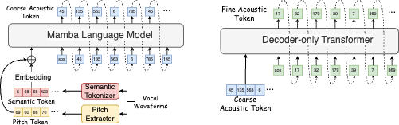

Anonymous Authors
In this paper, we propose Sinba, a system that can directly generate corresponding background accompaniment music from vocal input, allowing users to create complete songs using only sung vocals. Sinba adopts a decoder-only backbone network architecture. We utilize the Mamba model, which is a linear-time sequence modeling method with selective state spaces and has been proven to achieve more advanced performance than Transformers as a foundation model in long-sequence modeling tasks. However, the Mamba was initially applied to audio tasks by pre-training directly on raw audio waveform samples as the backbone model. In this paper, we convert both the training targets and inputs into discretized tokens for direct training. We also extract pitch information from the vocal input as an additional feature for the model. The proposed model is trained using source-separated data pairs. Subjective and objective experimental results demonstrate that the proposed model can generate high-quality accompaniment that matches the style and rhythm of the vocal input, outperforming the Transformer-based baseline. Synthesized audio samples are available at:https://sounddemos.github.io/sinba.
Figure 1: Overview of Sinba, where coarse acoustic tokens and fine acoustic tokens are concatenated vertically before being input to the Audio Tokenizer Decoder.
Figure 2: Diagram of the Sinba modeling process.
| Ground Truth | Enc-Dec Transformer | Dec-Only Transformer | SingSong (Replicated) | Sinba w/o Pitch Tokens | Sinba (Ours) |
|---|---|---|---|---|---|
| Ground Truth | Isolated Vocal | Source-separated Vocal |
|---|---|---|
| Synthesized Vocals | Isolated Vocals |
|---|---|
| Long-Duration Input Audio Inference |
|---|